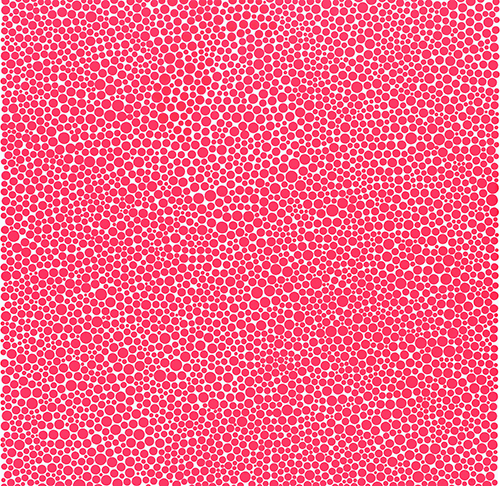
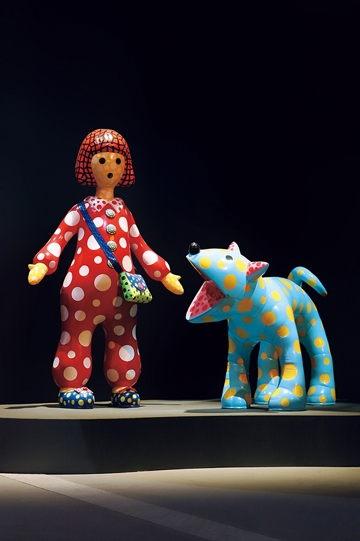
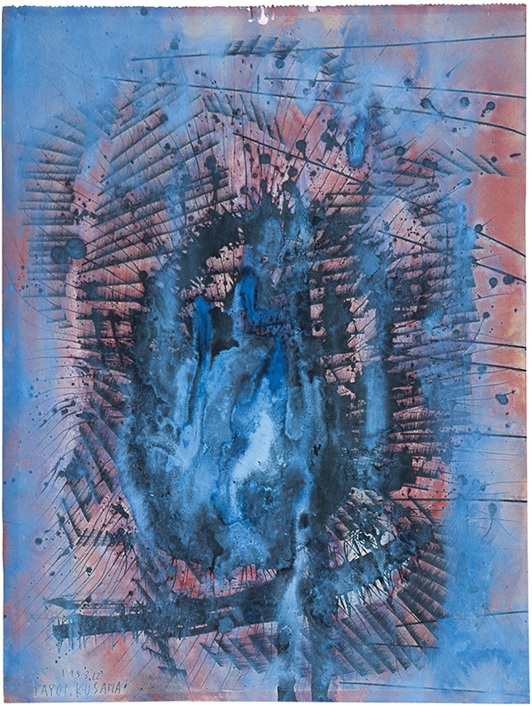
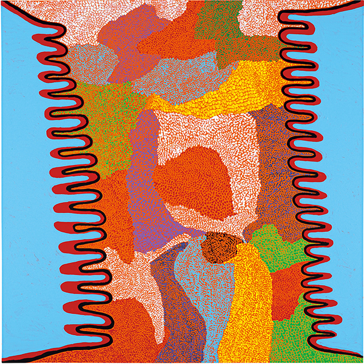
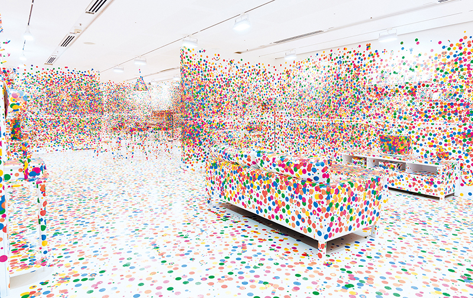
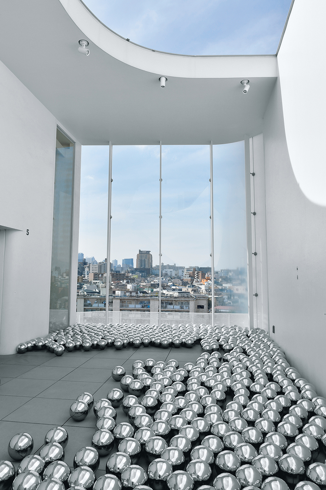

Pink Dots － Let Me Rest in a Tomb of Stars (detail) 1993–1994
© YAYOI KUSAMA
From a young age, Kusama has suffered from visual and auditory hallucinations. Her mental health condition has had a tremendous impact on the artist’s creative activities. In the 1950s, driven by her own obsessions, Kusama created an enormous number of drawings, resulting in an opportunity to make her breakthrough as an artist. After relocating to the United States in 1957, the artist began to create a series of works that could be described as ritual of “self-obliteration,” where all existence is engulfed in infinitely repetitive patterns such as polka dots and nets while the self is immersed into a boundless world. These works express a desire for salvation from psychological disorders and simultaneously reflect her intention to liberate society from absurd oppression through happenings and other forms of expression. However, from the late 1970s to the 1980s, after returning to Japan due to mental and physical health conditions, Kusama created small-scale works such as collages and works on ‘shikishi’ paperboards in her room in a psychiatric hospital. Subsequently, her creations expanded to an environmental scale, such as multi-canvas paintings and gigantic inflatable works. Kusama’s concept of “self-obliteration” is no longer solely a matter of the artist’s inner psyche; rather, it invites us into this sensation as though we are caught in a solemn “reverberation from the universe.” This exhibition focuses on the theme of illness, which can be described as the driving force behind Kusama’s art, showcasing a diverse range of works and related materials from her early years to the present day. We invite you to witness these productions of Kusama’s abundant creativity that reverberate to the farthest reaches of the universe.


L: Left: Yayoi-chan 2013 Right: TOKO-TON 2013
Installation view at Aviva Studios, Manchester, 2023 R: Ancient
Fire 1953
© YAYOI KUSAMA


L: STAR FAIRY 2013
R: The Obliteration Room 2002–present
Collaboration between Yayoi Kusama and Queens land Art Gallery.
Commissioned Queensland Art Gallery.
Gift of the artist through the Queensland Art Gallery Foundation
2012. Collection: QAGOMA.
© YAYOI KUSAMA. Photo: QAGOMA

Narcissus Garden 1966/2020 Installation view at YAYOI KUSAMA
MUSEUM, Tokyo 2020
© YAYOI KUSAMA
Thursday, April 24 – Sunday, August 31, 2025
Thursdays to Sundays and National Holidays
Mondays, Tuesdays and Wednesdays (except national holidays)
11:00 - 17:30
Adults: JPY 1,100 Children aged 6 - 18: JPY 600
*Children under age 6 are free. *Group and disability
discounts are not available.
① 11:00 - 12:30 (Enter by 11:30)
②12:00 - 13:30 (Enter by 12:30)
③ 13:00 - 14:30 (Enter by 13:30)
④14:00 - 15:30 (Enter by 14:30)
⑤ 15:00 - 16:30 (Enter by 15:30)
⑥16:00 - 17:30 (Enter by 16:30) Yayoi Kusama Museum has no
designated waiting area for visitors arriving before the
admission time. Please refrain from coming to the museum
before your admission time.